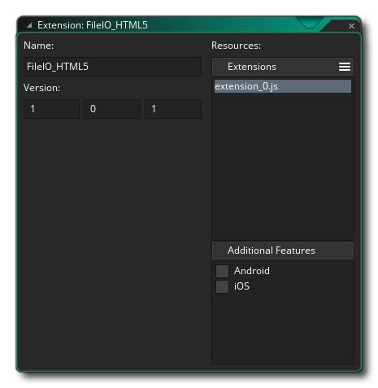
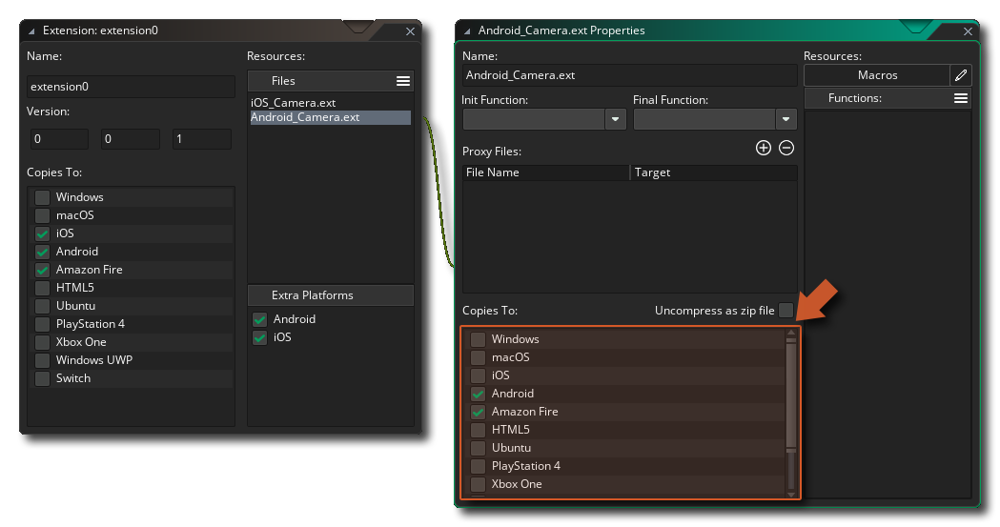
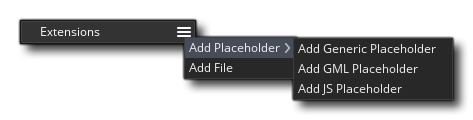
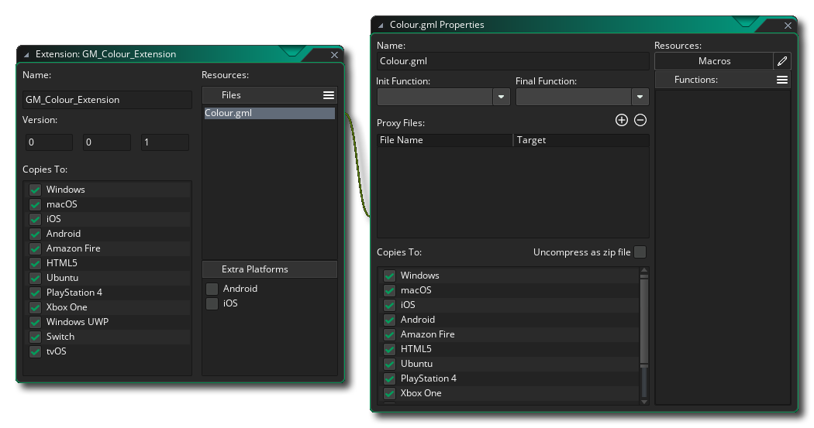
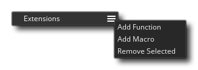
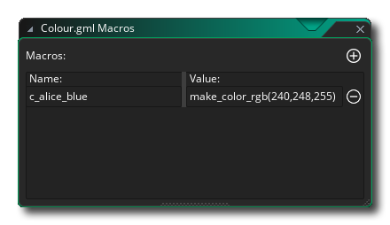
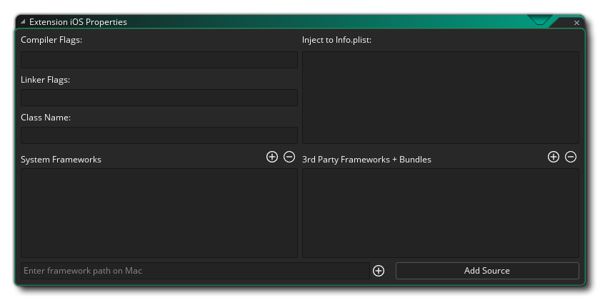

扩展包可以用来向 GameMaker Language（GML）中添加许多额外的函数和常量，或者作为一种在人们之间轻松转移游戏资产甚至整个项目的方式。如果扩展是为了增加额外的功能，那么所使用的函数可以将你的游戏链接到外部的 SDK 或用其他语言编写的源代码（例如，用于 Android 的 Java），以及本机 GML。 
通常情况下，第三方扩展会来自 GameMaker 市场，你订阅的扩展会在 市场库 窗口中列出，可以从那里安装，或者右键点击  扩展 资源文件夹，选择从我的库中添加已存在扩展。如果你没有从市场上获得扩展包，你仍然可以通过再次右键单击
扩展 资源文件夹，选择从我的库中添加已存在扩展。如果你没有从市场上获得扩展包，你仍然可以通过再次右键单击  资源树中的 扩展 文件夹并选择 添加现有资源 来将其添加到项目中。
资源树中的 扩展 文件夹并选择 添加现有资源 来将其添加到项目中。
如果你有用之前版本的 GameMaker Studio 创建的 *.GMEZ 格式扩展，你可以通过点击鼠标右键  菜单选项 导入文件 来添加这些内容。
菜单选项 导入文件 来添加这些内容。
有关使用和创建 扩展包 的更多信息，请参阅以下部分：
你一旦添加了扩展，你就可以开始在你的项目中使用它们。但你应该确保你扩展的属性与目标平台匹配，你也可以根据以下要求为扩展文件编辑导出平台：
- 所有平台： GML 扩展。这些是使用 GameMaker 语言（GML）编写的扩展，与所有目标平台兼容。
- Windows（标准、UWP 和 XBoxOne）: 你可以使用 Windows DLL文件（动态数据链接库）。
- Mac OS： Mac OS 平台可以使用标准的 DyLib 文件进行扩展。
- Ubuntu (Linux)： 对于 Ubuntu 平台，你需要确保你的扩展使用 SO 文件。
- Html5： 这个平台可以使用 JavaScript 扩展。
- Android： 这个平台需要用 Java 或 Android 框架 SDK 编写扩展。
- iOS： 这个平台的扩展是用 Objective C 编写的，需要 *.mm 和 *.h文件，或如果使用任何框架，预编译 *.a 本地文件。
- PlayStation： 对于 PlayStation 3 或 4，你的扩展应该是 PRX 文件，每个平台需要一个不同的 PRX 以符合平台的规范（PS3 或 PS4）。如果在 PSVita 上工作，扩展应该是 SUPRX。
要改变一个给定扩展文件或占位符的目标平台，你必须先打开它的扩展属性（双击
资源树中的扩展属性，或使用
并选择 打开属性)。一旦你进入了扩展属性对话框，你就可在右边的资源文件（图中resource-file)里选择你想编辑的：
一旦安装了扩展，就可以像使用 GameMaker 语言中使用的内置函数和常量一样使用函数和常量。如果你的游戏是跨平台的（例如，可在windows和android上运行），那么你应该在调用扩展的指定函数前，先做一个对系统的检查来预防发生问题。例如：
switch(os_type)
{
case os_android:
call_android_extension_function(x, y, z);
break;
case os_windows:
call_windows_extension_function(x, y, z);
break;
}请注意，对于不同的平台，你的扩展可以共享功能名称，因此如果你有一个包含不同文件的扩展名（例如）弹出 Windows 和 Android 的消息，则两个扩展文件可以共享相同的功能名称，只要它们两者都设置为 仅 导出到各自的平台。
要创建扩展，首先需要右键单击
要将文件添加到新扩展，你需要单击菜单图标 并选择 占位符 文件或目标平台实际所需的文件：
“Generic” 占位符可以是任何类型的文件，除了特定平台所需的文件（例如，没有 DLL 或 SO 文件），除了作为“连接器”将一组函数或常量与给出的扩展连接起来外，它将不会被使用。（通常仅用于 iOS 和 Android 扩展，在下面的部分中针对这些平台进行了解释）。你还可以添加 “GML” 和 “JS” 占位符文件以供更具体的使用。
通常，除非为 iOS 和 Android 构建，否则你不需要使用占位符，因此你可以选择 添加文件 选项以根据它们的目标平台添加以下任何一个文件：你会注意到
- .gml： 这是一个仅使用 GameMaker 语言制作的文件，并且与所有平台兼容。
- .js：这是一种 JavaScript 扩展格式，仅与 JS 平台模块（HTML5）兼容。
- .dll： 这是一种动态链接库扩展格式，仅与 Windows、UWP 和 Xbox One 平台兼容（每个平台都需要与其规范兼容的不同 *.dll 文件）。
- .dylib： 这是 Mac 的等效 DLL，只与 Mac 平台（而不是iOS）兼容。
- .so： 这是 Linux 的 DLL 等价物，只与 Ubuntu（Linux）平台兼容。
- .prx： 这是用于添加 PS4 平台功能的文件格式（每个平台将需要与其规范兼容的不同 *.prx 文件）。
你会注意到 Android 和 iOS 都没有文件类型，这是因为它们的设置略有不同。 再向下，你可以找到有关如何设置它们的解释，但首先让我们看看如何为任何目标平台创建一般 GML 扩展，因为过程都是相同的。
首先，你需要创建将要使用的文件。对于 GML 扩展，这将是一个文本文件（以 .gml 扩展名保存），并且格式如下：
#define c_alice_blue
return make_color_rgb(240,248,255);
#define instance_create_colour
var i = instance_create_layer(argument0, argument1, argument2);
with (i)
{
image_blend = argument3;
}
return i;如你所见，我们使用 #define 调用启动每个部分，在上面的示例中，它用于定义两个函数。你不需要为函数提供参数字段，因为稍后将添加它，只需使用 define 然后使用函数的名称并继续添加 GML 以匹配。如果你正在编写 DLL 或 JS 扩展，那么该过程将类似于扩展文件格式的正确语言。
完成后，你需要将文件添加到扩展（如上所述），该文件将新窗口链接到 文件属性 的扩展属性： 
在这里，你将选择扩展的目标平台（对于 GM，你将全部选择它们），以及重命名扩展文件并设置其他一些细节，我们将在稍后介绍。首先，我们想要添加常量和函数，以便用户可以从他们的项目代码中调用扩展。这样你就得点击扩展目录按钮 并选择你所需要的： 
选择 添加函数 将允许你向扩展添加函数，然后可以像在任何内置函数中一样在 GameMaker Studio 2 中调用该函数。将打开以下窗口，供你在以下位置定义函数：
在上图中，我们在函数编辑器中填充了我们在 GML 扩展脚本中定义的函数 instance_create_colour 的详细信息（函数编辑器不仅用于定义 GML 函数，对于任何其他扩展类型也是如此）。你可以看到我们已经为该函数指定了一个名称，这是你在项目中使用该函数时要调用的名称，并且此名称不必与扩展中使用的名称相匹配 —— 你可以将其设置为你想要的任何名称。 然后使用 外部名称 选项将其链接到扩展中定义的实际名称。 在下面你有一个用于定义 帮助 文本的部分，它是将在代码完成弹出窗口中使用的文本以及代码编辑器底部的帮助文本。
接下来，你可以定义返回类型，它可以是 double（实数浮点型）或 string（字符串） —— 如果外部函数没有返回任何内容，那么这无关紧要 —— 并且在此之下定义函数的参数。
最后，添加函数可以使用的参数（如果有）。参数可以是 doubles（双精度型） 或 strings（字符串），你可以通过单击添加按钮 添加它们，然后单击删除按钮
将其删除。注意你如果创建了一个 Windows 平台的dll文件并且它的参数超过4个，那么所有的参数类型必须一样.
完成所有操作后，就可以在项目中使用该函数，它将自动完成并进行颜色编码。定义的函数也可以设置为 初始函数[Init Functions] 或 最终函数[Final Functions]，这意味着它们将在游戏开始时（Init）和游戏结束时（Final）自动调用。
重要！ 所有平台都支持 Init 函数调用，但 并非 所有平台都会执行 Final 函数调用。这是因为某些平台只是关闭应用程序而不给出任何通知或时间来调用此函数。受此影响的平台有：iOS、Android、HTML5、PlayStation 和 XboxOne。
你拥有的另一个选项是创建一个 宏。宏可以是 常量 值或单个代码段（有关宏的更多信息，请参见 此处）。例如，我们可以将我们示例GML扩展上方的已定义的颜色为 c_alice_blue 的已定义的函数移除，并用宏代替它： 这里的编辑器几乎是不言自明的 —— 你可以给出宏/常量的名称和值，或者一行简短的代码。请注意，如果宏是一行代码，则 每次调用宏时都会对其进行求值。
使用多个目标平台时，值得注意的是，你可以创建一个只包含 一组 功能/宏的扩展，这些功能/宏可以在 所有 平台上运行。这是通过将一个链接库作为扩展添加到游戏中并将其他链接库放入扩展属性窗口的 代理文件列表中来实现的。例如，假设你有一个名为 “Haggis.dll” 的 Windows dll 扩展。你只需将此 dll 复制为 Mac DyLib，将其命名为 “libHaggis.dylib” 并确保内部函数名称与原始 Windows dll的名称相匹配。然后将此 DyLib 添加到代理文件中并设置为在 Mac 平台上运行游戏时导出，并且 GameMaker Studio 2 将在调用扩展功能时自动使用它。
要添加代理文件，只需单击
扩展的扩展属性窗口中的按钮，然后浏览文件位置。添加后，你可能需要将扩展目标更改为相应的模块，当你下次运行游戏时，它将作为该平台的代理文件包含在内。你也可以通过单击
按钮删除代理文件，这将删除列表中的最后一个。
添加代理文件后，它们将存储在游戏的 YYP 中的 Extensions 文件夹中（你可以通过右键单击
你的代理文件遵循下面列出的命名约定，这很重要，因为 GameMaker Studio 2 将解析这些名称并根据文件的扩展名和名称为文件分配目标模块，并自动为你链接文件。如果你不遵循这些约定，你的游戏可能无法在运行时正常工作，因为 GameMaker Studio 2 将无法确定要使用哪个文件，或者它无法正确加载文件。
每个目标平台的命名约定如下：
平台 Names Windows <Name>.dll. Linux <Name>.so, lib<Name>.so, <Name>_linux.so, lib<Name>_linux.so Mac OSX <Name>.dylib, lib<Name>.dylib HTML5 <Name>.js PS4 <Name>.prx, lib<Name>.prx, <Name>_ps4.prx, lib<Name>_ps4.prx Xbox One <Name>_xboxone.dll 使用上述约定，你可以将 <Name> 部分替换为要为其添加代理文件的基本文件的名称。
要为 Android 创建扩展程序，你必须分两部分来完成。 第一部分是添加扩展本身，以及所需的文件等......第二部分是创建扩展所需的函数和宏/常量。使用 占位符 文件添加函数和常量以将它们组合在一起，因此你将添加占位符，然后按照上一节中的说明定义函数和宏。要添加其余文件，你需要先在编辑器的 附加功能 部分中勾选 Android 复选框：
在这里，提供给你以下详细信息：
- 类名（ClassName）： 你的扩展可以有多个类，每个类都有自己的函数和常量，因此你应该为其指定一个反映其用途的名称。
- Android 权限（Android Permissions）： 你可以在此处添加扩展程序所需的额外权限。这些权限的内容完全取决于扩展程序的用途，因此你应该查看 Google 为 Android 平台提供的文档，或者，如果你使用的是第三方 SDK，则应查看 SDK 附带的文档。要添加新权限，你需要单击按钮
- 注入到 Gradle 依赖项（Inject To Gradle Dependencies）： 在这里你可以添加需要注入（添加）到 Gradle 构建依赖项中的额外代码。
- 注入到 AndroidManifest.xml 表单（Inject to AndroidManifest.xml Manifest）： 在这里，你可以设置额外的代码，以便在你的游戏构建用于测试或最终发布时注入（添加）到 Android Manifest XML 文件中。 在将游戏提交到商店之前，请务必仔细修改此（以及你的权限），因为不正确的设置会导致你的游戏无法提交。
- 注入到 AndroidManifest.xml 应用（Inject to AndroidManifest.xml Application）： 在这里，你可以设置额外的代码，以便在你的游戏构建用于测试或最终发布时，在应用程序标题下注入（添加）到 Android Manifest XML 文件。 在将游戏提交到商店之前，请务必仔细修改此（以及你的权限），因为不正确的设置会导致你的游戏无法提交。
- 注入到 AndroidManifest.xml RunnerActivity（Inject to AndroidManifest.xml RunnerActivity）: 在这里，你可以设置额外的代码，以便在你的游戏构建用于测试或最终发布时，在 RunnerActivity 标题下注入（添加）到 Android Manifest XML 文件。在将游戏提交到商店之前，请务必仔细修改此（以及你的权限），因为不正确的设置会导致你的游戏无法提交。
正确设置后，你需要添加扩展包所需的文件才能正常工作。要执行此操作，你需要单击底部的按钮，添加 SDK 或 添加源（Source），然后浏览要添加的文件。添加的文件将与你的扩展一起存储在 AndroidSource 目录中。你可以随时通过右键单击
有关创建 Android 扩展程序的详细信息，请参阅 YoYo 游戏知识库。
要为iOS创建扩展，你必须分两部分来完成。第一部分是添加扩展本身，以及所需的文件等......第二部分是创建扩展所需的函数和宏/常量。使用 占位符 文件添加函数和常量以将它们组合在一起，因此你将添加占位符，然后按照上一节中的说明定义函数和宏。要添加其余文件，你需要首先勾选编辑器的 附加功能 部分中的 iOS 复选框： 
在这里，提供给你以下详细信息：
- 连接器标志（Linker Flags） / 编译器标志（Compiler Flags）： 某些框架和第三方 SDK 需要添加额外的链接器标志和编译器标志才能在此处指定（有关详细信息，请参阅 SDK 或框架随附的文档）。
- 类名（ClassName）： 你的扩展可以有多个类，每个类都有自己的函数和常量，因此你应该为其指定一个反映其用途的名称
- 系统框架（System Frameworks）： 在这里，你可以将任何 iOS 系统框架添加到你的扩展程序中。通过单击
- 注入到 Info.plist（Inject to Info.plist）： 在这里，你可以添加任何代码以注入 info.plist 文件。
- 第三方框架 + 捆绑包（3rd Party Frameworks and Bundles）： 本节用于添加第三方框架和 SDK 包。 与系统框架一样，你可以单击按钮
如果你的扩展已添加任何系统框架或第三方框架，现在这些框架将在“扩展属性”窗口中列出，每个框架旁边都有一个复选框。如果你选中复选框，则表示你正在启用 弱 链接，如果你需要使用自己的值“覆盖”所包含库中的任何符号，这将非常有用，但应注意这样做会降低链接速度。
有关创建 iOS 扩展的更多信息，请参阅 YoYo游戏知识库。


YoYo Games 第三方扩展
传统版本的 GameMaker 内置了许多第三方功能，但效率低且难以维护，因为如果第三方更改了任何特定功能，则必须更新整个 GameMaker IDE 和运行时。因此，当前版本已采用扩展程序包来为你的游戏添加第三方支持。这意味着你可以选择添加所需的额外功能，甚至可以调整和编辑它们以满足你的特定需求。
当你选择特定的游戏选项（例如 Facebook 或 Google Ads）时，大多数扩展程序都会为你下载和安装，但你可以从以下 YoYo 游戏 知识库 文章中找到有关它们的更多信息：
你可以从以下市场页面中找到扩展程序：
请注意，这些扩展附带了演示和帮助文件，解释了如何使用它们，因此它们的功能未在手册中介绍。